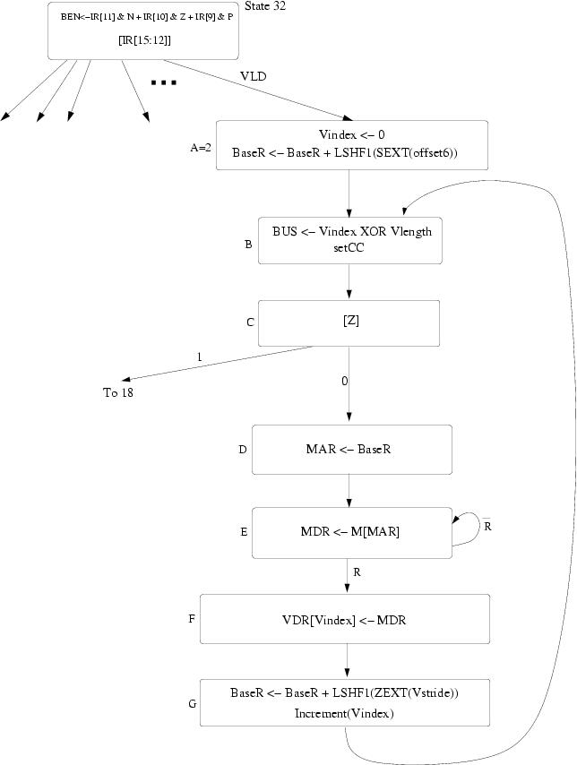

Assume an ADD operation is executed like this in the pipeline:
| 1 | 2 | 3 | 4 | 5 | 6 | 7 |
|---|---|---|---|---|---|---|
| F | D | A | A | A | A | S |
and a MUL operation is executed like this in the pipeline:
| 1 | 2 | 3 | 4 | 5 | 6 | 7 | 8 | 9 |
|---|---|---|---|---|---|---|---|---|
| F | D | M | M | M | M | M | M | S |
F: Fetch, D: Decode, A: Execute stage (for ADD), M: Execute stage for MUL, S: Store result (Write-back)
| 1 | 2 | 3 | 4 | 5 | 6 | 7 | 8 | 9 | 10 | 11 | 12 | 13 | 14 | 15 | 16 | 17 | 18 | 19 | 20 | 21 | 22 | 23 | 24 | 25 | 26 |
|---|---|---|---|---|---|---|---|---|---|---|---|---|---|---|---|---|---|---|---|---|---|---|---|---|---|
| F | D | M | M | M | M | M | M | S | |||||||||||||||||
| F | D | D | D | D | D | D | D | A | A | A | A | S | |||||||||||||
| F | F | F | F | F | F | F | D | A | A | A | A | S | |||||||||||||
| F | D | M | M | M | M | M | M | S | |||||||||||||||||
| F | D | D | D | D | D | D | D | A | A | A | A | S | |||||||||||||
| F | F | F | F | F | F | F | D | M | M | M | M | M | M | S |
Execution time: 26 cycles
| 1 | 2 | 3 | 4 | 5 | 6 | 7 | 8 | 9 | 10 | 11 | 12 | 13 | 14 | 15 | 16 | 17 | 18 | 19 | 20 | 21 | 22 | 23 | 24 |
|---|---|---|---|---|---|---|---|---|---|---|---|---|---|---|---|---|---|---|---|---|---|---|---|
| F | D | M | M | M | M | M | M | S | |||||||||||||||
| F | D | D | D | D | D | D | A | A | A | A | S | ||||||||||||
| F | F | F | F | F | F | D | A | A | A | A | S | ||||||||||||
| F | D | M | M | M | M | M | M | S | |||||||||||||||
| F | D | D | D | D | D | D | A | A | A | A | S | ||||||||||||
| F | F | F | F | F | F | D | M | M | M | M | M | M | S |
Execution time: 24 cycles
Pipeline with scoreboarding and one adder and one multiplier (assuming one instruction fetched per cycle):
The adder and multiplier are not pipelined and there is no data forwarding:
| 1 | 2 | 3 | 4 | 5 | 6 | 7 | 8 | 9 | 10 | 11 | 12 | 13 | 14 | 15 | 16 | 17 | 18 | 19 | 20 | 21 | 22 | 23 | 24 | 25 | 26 | 27 | 28 | 29 |
|---|---|---|---|---|---|---|---|---|---|---|---|---|---|---|---|---|---|---|---|---|---|---|---|---|---|---|---|---|
| F | D | M | M | M | M | M | M | S | ||||||||||||||||||||
| F | D | D | D | D | D | D | D | A | A | A | A | S | ||||||||||||||||
| F | F | F | F | F | F | F | D | D | D | D | A | A | A | A | S | |||||||||||||
| F | F | F | F | D | M | M | M | M | M | M | S | |||||||||||||||||
| F | D | D | D | D | D | D | D | A | A | A | A | S | ||||||||||||||||
| F | F | F | F | F | F | F | D | M | M | M | M | M | M | S |
Execution time: 29 cycles
The adder and multiplier are not pipelined and there is data forwarding:
| 1 | 2 | 3 | 4 | 5 | 6 | 7 | 8 | 9 | 10 | 11 | 12 | 13 | 14 | 15 | 16 | 17 | 18 | 19 | 20 | 21 | 22 | 23 | 24 | 25 | 26 | 27 |
|---|---|---|---|---|---|---|---|---|---|---|---|---|---|---|---|---|---|---|---|---|---|---|---|---|---|---|
| F | D | M | M | M | M | M | M | S | ||||||||||||||||||
| F | D | D | D | D | D | D | A | A | A | A | S | |||||||||||||||
| F | F | F | F | F | F | D | D | D | D | A | A | A | A | S | ||||||||||||
| F | F | F | D | M | M | M | M | M | M | S | ||||||||||||||||
| F | D | D | D | D | D | D | A | A | A | A | S | |||||||||||||||
| F | F | F | F | F | F | D | M | M | M | M | M | M | S |
Execution time: 27 cycles
The adder and multiplier are pipelined and there is no data forwarding:
| 1 | 2 | 3 | 4 | 5 | 6 | 7 | 8 | 9 | 10 | 11 | 12 | 13 | 14 | 15 | 16 | 17 | 18 | 19 | 20 | 21 | 22 | 23 | 24 | 25 | 26 |
|---|---|---|---|---|---|---|---|---|---|---|---|---|---|---|---|---|---|---|---|---|---|---|---|---|---|
| F | D | M | M | M | M | M | M | S | |||||||||||||||||
| F | D | D | D | D | D | D | D | A | A | A | A | S | |||||||||||||
| F | F | F | F | F | F | F | D | A | A | A | A | S | |||||||||||||
| F | D | M | M | M | M | M | M | S | |||||||||||||||||
| F | D | D | D | D | D | D | D | A | A | A | A | S | |||||||||||||
| F | F | F | F | F | F | F | D | M | M | M | M | M | M | S |
Execution time: 26 cycles
The adder and multiplier are pipelined and there is data forwarding:
| 1 | 2 | 3 | 4 | 5 | 6 | 7 | 8 | 9 | 10 | 11 | 12 | 13 | 14 | 15 | 16 | 17 | 18 | 19 | 20 | 21 | 22 | 23 | 24 |
|---|---|---|---|---|---|---|---|---|---|---|---|---|---|---|---|---|---|---|---|---|---|---|---|
| F | D | M | M | M | M | M | M | S | |||||||||||||||
| F | D | D | D | D | D | D | A | A | A | A | S | ||||||||||||
| F | F | F | F | F | F | D | A | A | A | A | S | ||||||||||||
| F | D | M | M | M | M | M | M | S | |||||||||||||||
| F | D | D | D | D | D | D | A | A | A | A | S | ||||||||||||
| F | F | F | F | F | F | D | M | M | M | M | M | M | S |
Execution time: 24 cycles
Pipeline diagram:
| Instruction | 1 | 2 | 3 | 4 | 5 | 6 | 7 | 8 | 9 | 10 | 11 | 12 | 13 | 14 | 15 |
|---|---|---|---|---|---|---|---|---|---|---|---|---|---|---|---|
| Start of first iteration (R1 is even) | |||||||||||||||
| STW | F | D | E | E | E | S | |||||||||
| ADD | F | D | E | E | E | S | |||||||||
| AND | F | D | E | E | S | ||||||||||
| BRz | F | D | D | E | S | ||||||||||
| ADD | F | D | E | E | E | S | |||||||||
| ADD | F | D | E | E | E | S | |||||||||
| BRp | F | D | D | D | E | S | |||||||||
| End of the first iteration (R1 is odd now) | |||||||||||||||
| STW | F | ||||||||||||||
The loop takes the same number of cycles to execute for even and odd values of R1. Each iteration takes 14 cycles in the steady state. There are 5 iterations for even values of R1 and 4 iterations for odd values of R1. The total number of cycles is:
The extra 1 cycle comes from the last iteration (Store result stage of the BRp instruction).
Pipeline diagram:
| Instruction | 1 | 2 | 3 | 4 | 5 | 6 | 7 | 8 | 9 | 10 | 11 | 12 | 13 | 14 | 15 | 16 |
|---|---|---|---|---|---|---|---|---|---|---|---|---|---|---|---|---|
| Start of first iteration (R1 is even) | ||||||||||||||||
| STW | F | D | E | E | E | S | ||||||||||
| ADD | F | D | E | E | E | S | ||||||||||
| AND | F | D | E | E | S | |||||||||||
| BRz | F | D | D | E | S | |||||||||||
| ADD | F | F | D | E | E | E | S | |||||||||
| ADD | F | D | E | E | E | S | ||||||||||
| BRp | F | D | D | D | E | S | ||||||||||
| End of the first iteration (R1 is odd now) | ||||||||||||||||
| STW | F | F | F | D | E | E | E | S | ||||||||
The loop takes the same number of cycles to execute for even and odd values of R1. Each iteration takes 13 cycles but 3 cycles can be overlapped with the next iteration. The total number of cycles is:
BRz instruction will always be predicted not taken. It is taken when R1 is even. So it will be mispredicted when R1 is even and correctly predicted when R1 is odd. The following diagram shows three consecutive iterations of the loop. In the first iteration, BRz is mispredicted, in the second iteration it is correctly predicted.
The first BRp instruction is always predicted taken. It is always predicted correctly. The second BRp instruction is also always predicted taken. It is mispredicted only once in the last iteration of the loop.
1 2 3 4 5 6 7 8 9 10 11 12 13 14 15 16 17 18 19 20 21 22 23 24 25 26 27 28 29 30 31 32 33
-------------------------------------------------------------------------------------------------------------- Start of first iteration (R1 is even)
STW F | D | E | E | E | S
ADD F | D | E | E | E | S
AND F | D | E | E | S
BRz F | D | D | E | S (Mispredicted)
ADD R1, R1, #3 F | F | D | Flushed
ADD R5, R5, #-1 F | Flushed
ADD R1, R1, #1 F | D | E | E | E | S
ADD R7, R7, #-1 F | D | E | E | E | S
BRp DOIT F | D | D | D | E | S (Correctly predicted)
------------------------------------------------------------------------------------------------------------- Start of second iteration (R1 is odd)
STW F | F | F | D | E | E | E | S
ADD F | D | E | E | E | S
AND F | D | E | E | S
BRz F | D | D | E | S (Correctly predicted)
ADD R1, R1, #3 F | F | D | E | E | E | S
ADD R5, R5, #-1 F | D | E | E | E | S
BRp DOIT F | D | D | D | E | S (Correctly predicted)
------------------------------------------------------------------------------------------------------------ Third iteration (R1 is even)
STW F | F | F | D | E | E | S
ADD F | D | E | E | E | S
AND F | D | E | E | S
BRz F | D | D | E | S (Mispredicted)
ADD R1, R1, #3 F | F | D | Flushed
ADD R5, R5, #-1 F | Flushed
ADD R1, R1, #1 F | D | E | E | E | S
ADD R7, R7, #-1 F | D | E | E | E | S
BRp DOIT F | D | D | D | E | S (Correctly predicted)
<--------- beginning of the loop ----><------------------------ steady state (22 cycles) ------------------------------------>
Loop steady state is shown above. It takes 22 cycles and it is repeated 4 times. The beginning of the loop (until the steady state) takes 10 cycles as shown above. The end of the loop (part of the last iteration which is not in steady state) takes 5 more cycles to execute. The total number of cycles is:
Prediction accuracies for each branch are:
Combined branch prediction accuracy = 12/18 = 67%


Assume the destination register is indicated first, followed by the source(s).
(As stated in the question, cycle counts assume a 16-way interleaved memory so that a new access can be started each cycle. Also, the adder and multiplier are pipelined.)
Scalar processor (one of the possible solutions)
MOVI R0, 0 (1 cycle)
LEA R4, A (1 cycle)
LEA R5, B (1 cycle)
LEA R6, C (1 cycle)
LEA R7, D (1 cycle)
LOOP LD R1, R5, R0 (11 cycles)
LD R2, R6, R0 (11 cycles)
LD R3, R7, R0 (11 cycles)
MUL R1, R1, R2 (6 cycles)
ADD R1, R1, R3 (4 cycles)
RSHFA R1, R1, 1 (1 cycle)
ST R1, R4, R0 (11 cycles)
ADD R0, R0, 1 (4 cycles)
ADD R1, R0, -100 (4 cycles)
BNZ LOOP (1 cycle)
Vector Processor:
The loop could be split into two parts as 64 and 36. Assume the vector code looks as follows: (This solution assumes that the addressing mode VLD V0, B+64 exists - if it doesn't, then you would need 4 + 3 cycles using a pipelined adder to add 64 to A,B,C,D)
LD Vln, #64 (1 cycle)
LD Vst, #1 (1 cycle)
VLD V0, B (11 + 63 cycles)
VLD V1, C (11 + 63 cycles)
Vmul V2, V0, V1 (6 + 63 cycles)
VLD V3, D (11 + 63 cycles)
Vadd V4, V2, V3 (4 + 63 cycles)
Vrshfa V5, V4, 1 (1 + 63 cycles)
VST V5, A (11 + 63 cycles)
LD Vln, #36 (1 cycle)
VLD V0, B+64 (11 + 35 cycles)
VLD V1, C+64 (11 + 35 cycles)
Vmul V2, V0, V1 (6 + 35 cycles)
VLD V3, D+64 (11 + 35 cycles)
Vadd V4, V2, V3 (4 + 35 cycles)
Vrshfa V5, V4, 1 (1 + 35 cycles)
VST V5, A+64 (11 + 35 cycles)
Vector processor without chaining (vector instructions done serially)
First part:
|-1-|-1-|--11--|---63---|--11--|---63---|-6-|---63---|--11--|---63---|-4-|---63---|-1-|---63---|--11--|---63---|
Second part:
|-1-|--11--|--35--|--11--|--35--|-6-|--35--|--11--|--35--|-4-|--35--|-1-|--35--|--11--|--35--|
Vector processor with chaining, 1 port to memory.
Chaining means the machine begins the next operation as soon as the operands are ready.
First part:
|-1-|-1-|--11--|---63---|--11--|---63---|--11--|---63---|--11--|---63---|
|-6-|---63---| |-4-|---63---|
|-1-|---63---|
Second part:
|-1-|--11--|--35--|--11--|--35--|--11--|--35--|--11--|--35--|
|-6-|--35--| |-4-|--35--|
|-1-|--35--|
Chaining, in this instance, hides the VMULT, VADD, and VSHL operations. Memory becomes the primary bottleneck.
483 cyclesVector processor with chaining; 2 loads, 1 store per cycle.
First part:
|-1-|-1-|--11--|---63---|
|--11--|---63---|
|-6-|---63---|
|--11--|---63---|
|-4-|---63---|
|-1-|---63---|
|--11--|---63---|
Second part:
|-1-|--11--|--35--|
|--11--|--35--|
|-6-|--35--|
|--11--|--35--|
|-4-|--35--|
|-1-|--35--|
|--11--|--35--|
Another solution is to split the loop into two equal parts as 50 and 50.
LD Vln, #50 (1 cycle)
LD Vst, #1 (1 cycle)
VLD V0, B (11 + 49 cycles)
VLD V1, C (11 + 49 cycles)
Vmul V2, V0, V1 (6 + 49 cycles)
VLD V3, D (11 + 49 cycles)
Vadd V4, V2, V3 (4 + 49 cycles)
Vrshfa V5, V4, 1 (1 + 49 cycles)
VST V5, A (11 + 49 cycles)
VLD V0, B+50 (11 + 49 cycles)
VLD V1, C+50 (11 + 49 cycles)
Vmul V2, V0, V1 (6 + 49 cycles)
VLD V3, D+50 (11 + 49 cycles)
Vadd V4, V2, V3 (4 + 49 cycles)
Vrshfa V5, V4, 1 (1 + 49 cycles)
VST V5, A+50 (11 + 49 cycles)
Vector processor without chaining (vector instructions done serially)
First part:
|-1-|-1-|--11--|---63---|--11--|---63---|-6-|---63---|--11--|---63---|-4-|---63---|-1-|---63---|--11--|---63---|
Second part:
|--11--|--35--|--11--|--35--|-6-|--35--|--11--|--35--|-4-|--35--|-1-|--35--|--11--|--35--|
Vector processor with chaining, 1 port to memory. Again, this would save only 1 cycle over solution A, since the first load for the second part must wait till the store of the first part finishes. Total = 482 cycles
Vector processor with chaining; 2 loads, 1 store per cycle
|-1-|-1-|-11-|-----49-----|
|-11-|-----49-----|
|-6-|-----49-----|
|-11-|-----49-----| ** LD D would need to wait for LD B to finish
|-4-|-----49-----|
|-1-|-----49-----|
|-11-|-----49-----|
|-11-|-----49-----|
|-11-|-----49-----| ** LD C+50 would need to wait till the LD D from the first part finishes
|-6-|-----49-----|
|-11-|-----49-----| ** LD D+50 would need to wait for LD B+50 to finish
|-4-|-----49-----|
|-1-|-----49-----|
|-11-|-----49-----|
X is the Vector Index Register, which holds the pointer to the element that is being processed by the vector instruction.
The two control signals are RESET.VINDEX and INCREMENT.VINDEX
The following solution assumes a change to the microsequencer to branch according to the Z condition code.
